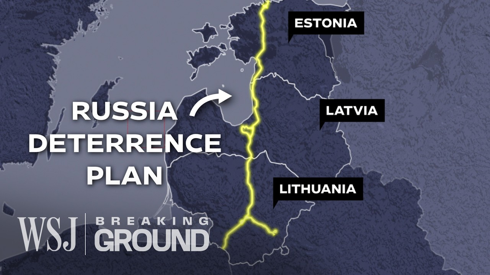

【为何这条270亿美元的铁路对北约如此关键 | WSJ Breaking Ground】
Summary: The EU and NATO face a critical rail connectivity issue in the Baltics, where Russian-gauge tracks hinder troop and supply movements, prompting the urgent $27B Rail Baltica project to standardize rail links and bolster regional security.
摘要： 欧盟和北约在波罗的海国家面临关键的铁路连通性问题，俄罗斯轨距轨道阻碍了部队和补给运输，促使耗资270亿美元的波罗的海铁路项目紧急启动，以标准化铁路连接并加强地区安全。

⏱️ Estimated Reading Time: 9 min
(dramatic music) - [Narrator] The EU and NATO have a problem.
（紧张的音乐）- [旁白] 欧盟和北约面临一个问题。
Three of the Baltic member states have better rail connections with Russia than the rest of Europe.
三个波罗的海成员国与俄罗斯的铁路连接比欧洲其他地区更紧密。
The former Soviet country still use the five foot wide Russian rail gauge, which is about three and a half inches wider than Europe's standard gauge, meaning passengers and cargo have to change trains when traveling into the region.
这些前苏联国家仍在使用五英尺宽的俄罗斯轨距，比欧洲标准轨距宽约3.5英寸，意味着乘客和货物进入该地区时必须换乘列车。
In the event of a military conflict with Russia, this would potentially become a critical choke point for NATO troops.
若与俄罗斯发生军事冲突，这可能成为北约部队的关键瓶颈。
We all agree in NATO that Russia is the long-term threat to NATO territory - [Narrator] At a cost of $27 billion, the Rail Baltica project aims to tackle NATO security fears head on.
北约一致认为俄罗斯是对北约领土的长期威胁 - [旁白] 耗资270亿美元的波罗的海铁路项目旨在直接应对北约的安全担忧。
[Narrator] On the maintenance of supplies depends the maintenance of the fight.
[旁白] 补给的维持决定了战斗的持续。
[Narrator] Historically, railways have been a critical element of Russia's warfare.
[旁白] 历史上，铁路一直是俄罗斯战争的关键要素。
Following the annexation of Crimea in 2014, one of Moscow's top priorities was to build a rail bridge linking the peninsula to Russia.
2014年吞并克里米亚后，莫斯科的首要任务之一是修建一座连接半岛与俄罗斯的铁路桥。
And during its deadly invasion of Ukraine in 2022, Moscow took full advantage of the rail links into the country, which like Russia and the Baltics, has the same wide gauge tracks.
在2022年对乌克兰的致命入侵中，莫斯科充分利用了通往该国的铁路连接，该国与俄罗斯和波罗的海国家一样使用宽轨距轨道。
If you have an interoperable interconnections railway gauge, this makes it easier to bring those troops even deeper into those territories where they want to be.
如果铁路轨距可互操作，这将使部队更容易深入他们想要进入的领土。
[Narrator] As Russia's war on Ukraine rages on and Moscow expands its military bases near the EU border, building a direct rail connection into the Baltics has become one of the blocks key security projects.
[旁白] 随着俄罗斯对乌克兰的战争持续，莫斯科在欧盟边境附近扩建军事基地，建设通往波罗的海的直接铁路连接已成为该集团的关键安全项目之一。
The idea for a European standard rail gauge in the Baltics has been around since the early nineties, when Estonia, Latvia, and Lithuania gained independence from the USSR.
波罗的海国家采用欧洲标准轨距的想法自90年代初就已存在，当时爱沙尼亚、拉脱维亚和立陶宛从苏联独立。
The current Baltic railway network was designed as an integral part of the vast railway network of the Soviet Union.
当前的波罗的海铁路网络被设计为苏联庞大铁路网络的组成部分。
East, West interconnections were important because they connected Russian cities with the Baltic ports of Klaipeda in Lithuania, Riga in Latvia, and Tallinn in Estonia.
东西向连接很重要，因为它们将俄罗斯城市与立陶宛的克莱佩达、拉脱维亚的里加和爱沙尼亚的塔林等波罗的海港口连接起来。
The North South interconnection was not so much developed, and this is where we come to a problem now, because that is the route that connects them with their NATO and EU allies.
南北向连接发展不足，这正是当前问题的根源，因为这是连接他们与北约和欧盟盟友的路线。
[Narrator] Today, this causes significant delays for passengers and up to eight hours for cargo to be transferred from one train to another at the border between Poland and Lithuania.
[旁白] 如今，这导致乘客严重延误，货物在波兰和立陶宛边境换乘列车最多需要八小时。
This bottleneck could become a major vulnerability in the event of a military conflict, because the same track gauge that hinders the movements of NATO forces could offer Russian troops and supply trains the ability to move quickly and directly into the heart of the Baltics, all of which makes Rail Baltica, a project to build a 540 mile long high speed rail line, incredibly urgent.
这一瓶颈可能在军事冲突中成为重大弱点，因为阻碍北约部队行动的相同轨距可能让俄罗斯部队和补给列车快速直接进入波罗的海腹地，这一切使得建设540英里长高速铁路的波罗的海铁路项目变得极其紧迫。
Originally launched in 2014, in a bid to save time and billions of dollars on the transfer of goods and passengers, the project suddenly has a new purpose.
该项目最初于2014年启动，旨在节省货物和乘客转运的时间和数十亿美元，如今突然有了新目标。
This is also a lesson from Ukraine that you have these two track movements that you have to bring military supplies and military personal of your allies into those countries.
乌克兰的教训是，必须通过铁路运输将盟国的军事补给和人员送入这些国家。
And at the same time, you have huge masses of people trying to leave the country.
同时，还有大量民众试图离开该国。
[Narrator] Official estimates Project Rail Baltica will be able to replace a four mile long military convoy with a single 40 wagon train, and in the event of armed conflicts, up to 143,000 people could be evacuated from the Baltic capitals to Poland in one day.
[旁白] 官方估计波罗的海铁路项目将能用一列40节车厢的火车替代四英里长的军事车队，在武装冲突发生时，一天内可将多达14.3万人从波罗的海首都疏散至波兰。
The original project included new train stations, freight terminals, and links to airports and seaports in the region as part of the Greater North Sea Baltic corridor.
原计划包括新建火车站、货运站以及连接该地区机场和海港的线路，作为大北海-波罗的海走廊的一部分。
But development stalled during the pandemic and bureaucratic challenges, such as delayed designs, have pushed Rail Baltica at least five years behind the initial completion deadline of the end of 2025.
但疫情期间进展停滞，官僚主义挑战（如设计延误）使波罗的海铁路项目比原定的2025年底完工期限至少推迟五年。
There are so many actors in this project, which also makes it difficult to accommodate all the different opinions about the route, about how it has to be managed, about where those finances have to come from.
该项目涉及众多参与方，这也使得协调关于路线、管理方式和资金来源的各种不同意见变得困难。
[Narrator] Over a decade, mounting costs have seen developers estimates increase fourfold.
[旁白] 十多年来，不断上涨的成本使开发商的估算增加了四倍。
To manage these challenges, the Baltic states have decided to split the project into two phases.
为应对这些挑战，波罗的海国家决定将项目分为两个阶段。
The first costing $17 billion will see a single track rather than the original double laid by 2030, and focus on the most important train stops.
耗资170亿美元的第一阶段将在2030年前铺设单线而非原计划的双线，并专注于最重要的火车站。
The second track and additional train stations are to be completed as part of a second phase, but no specific completion date has been set.
第二条轨道和额外火车站将作为第二阶段完成，但未设定具体完工日期。
Having a single line track is better than having none.
有一条单线总比没有好。
I think we should just concentrate now on finishing this one single line in order to have this key fundamental interconnection.
我认为我们现在应该集中精力完成这条单线，以实现这一关键的基础互联。
[Narrator] But securing financing is a major challenge, even just for the first phase.
[旁白] 但确保资金到位是重大挑战，即使仅针对第一阶段。
Rail Baltica representatives say they have already received almost four and a half billion dollars, 85% of which comes from the EU, but with the block's next financial period due to start in 2028, the project will have to reapply for funding.
波罗的海铁路代表表示已获得近45亿美元资金，其中85%来自欧盟，但随着欧盟下一个财政周期将于2028年开始，该项目将不得不重新申请资金。
Rail Baltica hopes to secure another four and a half billion dollars, but this would still leave an $8 billion funding gap.
波罗的海铁路希望再获得45亿美元，但这仍将留下80亿美元的资金缺口。
While the project's representatives said they were exploring alternative funding strategies, Lithuania, Latvia, and Estonia are still facing a multi-billion dollar challenge.
尽管项目代表表示正在探索替代融资策略，立陶宛、拉脱维亚和爱沙尼亚仍面临数十亿美元的挑战。
But Russia's war in Ukraine has turned this new railway project into a critical lifeline for the region and Europe.
但俄罗斯对乌克兰的战争使这一新铁路项目成为该地区和欧洲的关键生命线。
It is important now to perceive this project not only in terms of defense, but first of all in terms of deterrence as well, sending a message to our adversaries that we are thinking of all the important aspects in defense, including logistics and military mobility.
现在重要的是不仅要从防御角度看待该项目，首先还要从威慑角度考虑，向对手传递我们正在考虑防御的所有重要方面（包括后勤和军事机动性）的信息。